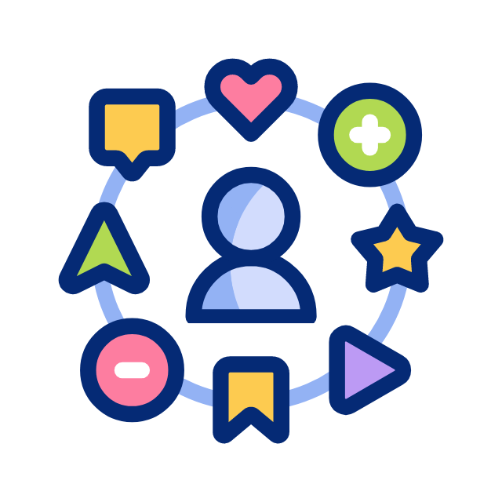

Технологии стремительно изменяют мир вокруг нас, и рынок труда не является исключением. Влияние технологий на профессии становится все более заметным, и важно понимать, как эти изменения могут повлиять на вашу карьеру. В этой статье мы рассмотрим, как технологии влияют на требования к навыкам, какие профессии находятся под угрозой из-за автоматизации и роботизации, а также какие новые возможности открываются благодаря технологическим инновациям.
Изменение требований к навыкам и квалификациям
Современные технологии требуют от работников новых навыков и знаний. Если раньше достаточно было иметь базовое образование и опыт работы, то сегодня работодатели ищут специалистов с конкретными техническими навыками и умением адаптироваться к новым условиям.
Важность цифровой грамотности
Цифровая грамотность становится необходимым требованием для большинства профессий, включая знание офисных программ, программирования, кибербезопасности и работы с большими данными, что значительно повышает шансы на успешное трудоустройство в маркетинге, финансах и управлении проектами.
Мягкие навыки (soft skills)
Работодатели ценят не только технические навыки, но и мягкие, такие как коммуникация, креативность, эмоциональный интеллект и умение управлять временем. Эти навыки важны для эффективной работы в команде и адаптации к изменениям, особенно в условиях удаленной работы, где самоорганизация и планирование времени становятся критически важными для поддержания продуктивности и избегания выгорания.
Автоматизация и роботизация: какие профессии под угрозой?
Автоматизация и роботизация приводят к тому, что некоторые профессии становятся менее востребованными или вовсе исчезают. Это связано с тем, что машины и программы могут выполнять задачи быстрее и точнее, чем люди.
Пример: В автомобильной промышленности роботы круглосуточно и безошибочно собирают автомобили, превосходя человеческие рабочие силы. В банковской сфере автоматизированные системы быстро и точно выполняют финансовые операции, снижая необходимость в большом количестве сотрудников. В логистике и складском хозяйстве автоматизированные системы управления оптимизируют процессы, уменьшая ручной труд. В здравоохранении автоматизация улучшает диагностику и лечение с помощью роботов-хирургов и систем анализа медицинских данных.
Профессии под угрозой
| Профессия | Причина «угрозы» |
|---|---|
| Производственные рабочие | Роботы и автоматизированные системы все чаще заменяют людей на производственных линиях. |
| Кассиры и продавцы | С развитием онлайн-торговли и самообслуживания в магазинах, потребность в кассирах и продавцах уменьшается. |
| Операторы колл-центров | Чат-боты и автоматизированные системы обслуживания клиентов могут выполнять многие задачи, которые ранее требовали участия человека. |
Новые профессии и возможности
Несмотря на то, что некоторые профессии исчезают, технологии также создают новые возможности и рабочие места. Появляются новые профессии, которые требуют специфических знаний и навыков, например:
- Разработчики искусственного интеллекта (AI): С развитием AI-технологий появляется потребность в специалистах, которые могут разрабатывать и внедрять AI-решения.
- Аналитики данных: Большие данные (Big Data) становятся важным ресурсом для бизнеса, и аналитики данных помогают извлекать из них полезную информацию.
- Специалисты по кибербезопасности: С увеличением количества кибератак возрастает потребность в специалистах, которые могут защищать информацию и системы.
Как подготовиться к изменениям
Чтобы успешно адаптироваться к изменениям на рынке труда, важно постоянно развивать свои навыки и быть готовым к обучению новым технологиям.
1
Обучение и
саморазвитие
- Онлайн-курсы: Платформы, такие как Coursera, Udemy и Khan Academy, предлагают множество курсов по различным темам, от программирования до управления проектами.
2
Сетевое
взаимодействие

- Профессиональные сообщества: Вступайте в профессиональные сообщества и участвуйте в конференциях и вебинарах, чтобы быть в курсе последних тенденций и обмениваться опытом с коллегами
3
Гибкость и
адаптивность
- Развивайте креативность и критическое мышление: Данные навыки помогут вам быстро находить нестандартные решения и адаптироваться к новым условиям гораздо быстрее.